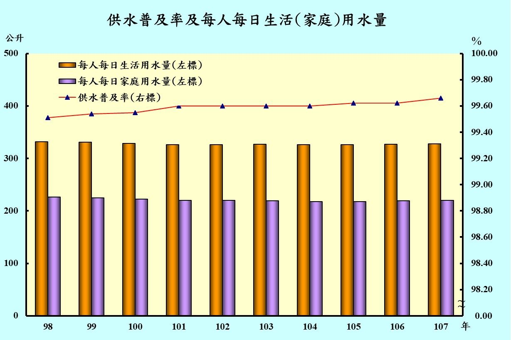

減少資源耗用
水資源
大家都知道，水是維持生命所必須的物質，是活命的根源，但它絕對不是「自來」的。看看我們，天天用水，對它卻未曾心存感恩、愛護和珍惜，反而稱它是「自來水」，以致大家在生活上不知愛惜它，浪費而不自覺，造成今日年年缺水的窘境。 一般人印象中，台灣年降雨量十分充沛，事實上，我們每人每年實際分配到可利用水量卻很少，只及世界平均值的1/6。
根據臺北自來水事業處所提供的每人每日生活用水量資料，我們知道臺北地區一個人一天會用掉300多公升的水，但按照國際標準值，
每人每天合理用水量其實為250公升，很明顯地浪費了許多水資源，你可能會想，我一天有用掉這麼多的水嗎?
從一天的開始，刷牙、洗臉一直到飲用白開水、洗菜煮飯、洗衣服等日常生活用水，再加上如廁、洗澡，一天下來確實會用掉大量的水，因此
，若不好好地珍惜水資源，可能會造成淡水資源枯竭、水費上漲而日常負擔加重、農作物收成減少引發飢荒等後續嚴重的問題。所以我們平時就應該節約用水
，為未來以及下一代打造永續利用的環境。
平時我們可以怎麼關心水資源呢，這裡我們提供臺北市水質測站的檢測資料，可以點擊下方地圖的黑點觀看當地資訊：
1.update_date : 日期 2.update_time : 時間 3.qua_id : 監控站ID 4.code_name : 監控站名稱
5.longitude : 經度 6.latitude: 緯度 7.qua_cntu: 濁度(NTU) 8.qua_cl: 餘氯(mg/L) 9.qua_ph: 酸度(pH) 10.偵測值-9係維修中，暫停偵測
民眾可點選與自己上學、工作環境、住家較近的數個監測站，並依據各指標查看水質情況。各水質指標的標準提供如下：
qua_cntu: 濁度(NTU)
世界衛生組織認為飲用水的濁度應小於等於5 NTU，理想上要小於1 NTU，而台灣飲用水的濁度標準是不得超過2 NTU。qua_cl: 餘氯(mg/L)
來源為自來水加氯消毒，世界衛生組織之標準為＜5 mg/L，而現行我國飲用水自由餘氯之標準訂為 0.2～1.0 mg/L。qua_ph: 酸度(pH)
「飲用水水質標準」之pH值的含量是6.0~8.5，事實上pH值與人體健康的關係並不密切。電資源
台灣具有豐富的發電設備，包括火力發電、水力發電、風力發電、核能發電等，但有些發電設備並不是對環境友善的，燃燒煤炭造成的空氣汙染、興建水壩
導致下游泥沙淤積的減少還有核廢料的處理等問題也是接踵而來，電力帶給我們生活的方便，並不表示我們可以隨便濫用與浪費，
當我們恣意浪費，不珍惜犧牲環境帶給我們的好處時，不僅會使得資源快速浩劫，也會無法享受科技進步帶來的便利。
若世界缺少了電，人類的文明將遲遲無法向前。因此節電的政策就非常重要，臺北市政府也提供了相關的
節電補助，提供社區設備汰換補助與肺機回收等相關計畫，鼓勵大眾都能為節能減碳盡一份心力。
而以下我們提供了近兩年來每月平均日用電度數，點選地圖右方行政區清單可以更新左方圖表及地圖位置:
垃圾清理
減量（Reduction）、再使用（Reuse）、物料回收（Recycling）是我們常聽到的3R，也就是藉由垃圾的減量、再使用以及回收達到永續發展的目的。
而近幾年來，對垃圾的管制也是越來越嚴格，除了限用塑膠袋的政策外，也逐步推動限用吸管的方式，減少垃圾製造及浪費，
並以「資源循環零廢棄」為基礎增加到了6R政策，即減量（Reduction）、再使用（Reuse）、物料回收（Recycling）
能源回收（Energy Recovery）、新生土地(Land Reclamation)及改變設計（Redesign），並透過永續物料管理（Sustainable Materials Management）的概念
，以現有的廢棄物管理為基礎，來促進整體資源循環再利用，有助於提升國內資源生產力及循環利用率，降低直接物質投入量。
以下統計圖呈現了臺北市近5年來的垃圾回收數據，以游標點選圖例可隱藏或顯示特定資料，觸碰長條圖可以觀看詳細數據: